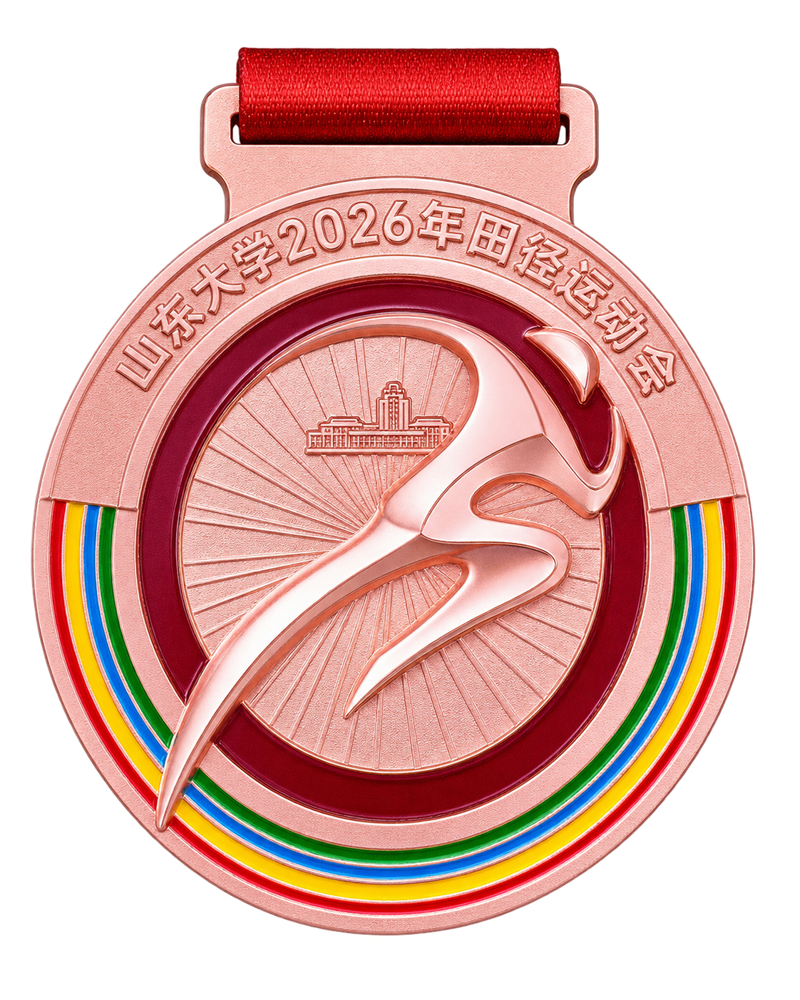

RunWise
一个跑步训练助手，覆盖跑步打卡、训练计划和 AI 问答。源代码可在 GitHub 查看。
RUN. BUILD. REPEAT. LIFE.
在代码中创造世界
在跑道上突破自己
$ npx create nakitong
$ git push
$ run --plan=next


在 RunWise 里，模型生成的片段经过 Python 服务、Java 后端与 Nginx，逐段传到浏览器。代理关闭响应缓冲后，页面可以在回答结束前显示内容。后端只把完整回答保存到历史记录。
一个跑步训练助手，覆盖跑步打卡、训练计划和 AI 问答。源代码可在 GitHub 查看。
举个例子：两次跑步分别是 5 公里用时 30 分钟、10 公里用时 50 分钟。把 80 分钟除以 15 公里，得到约 5 分 20 秒每公里。这就是 RunWise 汇总多次打卡时采用的计算方式。
我是 NakiTong。这里记录我做过的项目、跑步训练里遇到的问题，以及把想法做成网页的过程。